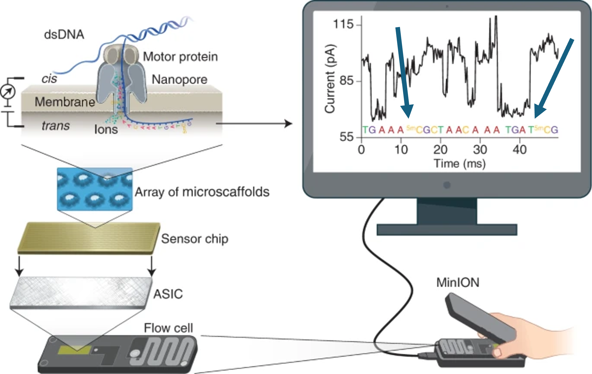

Sequenciamento de Terceira Geração com Oxford Nanopore
Princípios e Aplicações em Bioinformática
2025-07-25
Sobre mim
Muito prazer..

- Marcel;
- Físico médico;
- Me e PhD em Biotecnologia;
- Desde 2023, pós-doutorado em genética;
Interesses
Métodos alternativos ao uso de animais;
Identificão humana via DNA;
Biologia do tecido ósseo;
Biomateriais;
Regeneração tecidual;
Ciência aberta;
Bioinformática
Projeto

Não sou da nanopore
Sobre vocês
Sobre vocês
Sobre essa disciplina
Primeira edi√ß√£o (de muitas‚Ķüôè)
- Desde maio estou como colaborador no programa de Genética do IBB;
- Infelizmente não terá pratica de bancada;
- Vamos aprofundar sobre aspectos de bioinformática das análises;
- Vamos focar em genômica e epigenômica;
Desafios üöµ
Bancada..
Requisitos computacionais…
Tempo…
Programas…
Material online
Fruto do meu projeto
Método do ano de 2022
Passar os atalhos
Bioinformática
- NIH: “Bioinformatics, as related to genetics and genomics, is a scientific subdiscipline that involves using computer technology to collect, store, analyze and disseminate biological data and information, such as DNA and amino acid sequences or annotations about those sequences.”
Bioinformática
- NIH: “Bioinformatics, as related to genetics and genomics, is a scientific subdiscipline that involves using computer technology to collect, store, analyze and disseminate biological data and information, such as DNA and amino acid sequences or annotations about those sequences.”
Bioinformática
- Não vamos focar nos algoritmos;
- Mas sim nos dados produzidos e como analisa-los;
Cronograma
Dia 1 - Manhã:
Apresentação;
Sequenciamento nanopore;
Instalação dos softwares;
Dia 1 - Tarde:
Chamada de base;
Prática;
Dia 2 - Manhã:
Mapeamento de sequências;
Prática;
Dia 2 - Tarde:
Chamada de variantes;
Prática;
Cronograma
Dia 3 - Manhã:
Variantes estruturais;
Prática;
Dia 3 - Tarde:
Determinação de haplótipos;
Prática;
Dia 4 - Manhã:
Montagem de genomas;
Prática;
Dia 4 - Tarde:
Modificação de bases;
Prática;
Adeus üò•.
Avaliação
- 3 provas;
- 2 seminários;
- Estudo dirigido;
Avaliação
3 provas;2 seminários;Estudo dirigido;
- Participação na disciplina e fazer as atividades.
Programas e dados
- Baixar arquivos do Drive [link];
- Instalar o IGV (Robinson et al. 2011) [link];
- Usar o script de instalação dos programas no Linux;
Sequenciamento via ONT
Ordens de Grandeza do Genoma Humano
Número de cromossomos: 46 (23 pares);
Tamanho do genoma haploide: ~3,2 bilhões de pares de bases (3,2 Gb);
Número estimado de genes codificadores de proteínas: ~20.000;
Por que sequenciar?
A sequência é a “receita” da vida
- Ela determina a estrutura e função das moléculas biológicas.
DNA → RNA → Proteína
- Alterações na sequência podem afetar a função celular e causar doenças.
Entender a sequência = entender o funcionamento dos organismos
- Do gene à característica observável (fenótipo).
Permite identificar diferenças genéticas
- Entre indivíduos, espécies, populações ou células (ex: câncer).
Geração de sequenciamento
Sequenciamento: Comparativo entre Plataformas
| Plataforma | Tipo de Leitura | Tamanho de Leitura | Taxa de Erro | Tempo de Execução | Aplicações Comuns |
| Illumina | Short reads | 150–300 pares de bases | <1% | 1–2 dias | RNA-seq, exoma, WGS, genotipagem |
| PacBio Hifi | Long reads (alta fidelidade) | 10–25 kb (HiFi) | ~1% | 1–2 dias | Montagem genômica, haplótipos, variantes estruturais |
| Oxford Nanopre | Long/ultralong reads | 10 kb – >1 Mb | 5–10% (melhorando) | Horas a 2 dias | Metagenômica, epigenética, transcriptômica, forense |
Introdução a tecnologia de sequenciamento
Oxford nanopore technologies (ONT)
Portátil e escalável;
“Barato”;
Aquisição de dados em tempo real;
Altos volumes de dados (fastq > 50 Gb);
DNA* e RNA*;
Long reads (10 kb – 100 Kb);
Ultra (100 Kb – 300 Kb);
Recorde 4 Mb!!!!!!;
Acurácia atual de >99%;
ONT - Flowcells
Valores teórico de capacidade de sequenciamento.
ONT - Princípio
ONT - Princípio
ONT - Nanoporos
Lu, C., Bonini, A., Viel, J.H. et al. Toward single-molecule protein sequencing using nanopores. Nat Biotechnol 43, 312–322 (2025). (Lu et al. 2025)
ONT - Tipos de leitura
ONT - Tipos de leitura
Simplex: O sequenciamento de uma única fita. A fita de DNA modelo passa pelo nanoporo e é submetida ao basecalling. Isso é realizado no MinKNOW.Duplex: O sequenciamento de ambas as fitas. A fita complementar é lida imediatamente após a fita modelo e o basecalling consensual para ambas as fitas leva a um aumento ainda maior na precisão. Isso é realizado no Dorado.
ONT - Leitura da fita
ONT - Leitura da fita
Leitura DNA = 400 bp por segundo;
RNA = 70 bp por segundo;
6 bases simultâneas por poro;
{A,T,C,G};
ONT - Leitura da fita
Leitura DNA = 400 bp por segundo;
RNA = 70 bp por segundo;
6 bases simultâneas por poro;
{A,T,C,G};
- 4x4x4x4x4x4 =?
ONT - Leitura da fita
Leitura DNA = 400 bp por segundo;
RNA = 70 bp por segundo;
6 bases simultâneas por poro;
{A,T,C,G};
- 4x4x4x4x4x4 =?
- 4096 combinações!
ONT - Leitura da fita

ONT - RNA
Modificações no DNA

Modificações no DNA
- Existem cerca de 30 modificações de base descrita!
{A, T, C, G, 5mC}
{A, T, C, G, 5mC, 5hmC}
Modificações no DNA
- Existem cerca de 30 modificações de base descrita!
{A, T, C, G, 5mC}
5x5x5x5x5x5 = 15625 combinações!
{A, T, C, G, 5mC, 5hmC}
6x6x6x6x6x6 = 46656 combinações!
Basecallers
Basecalling.
Basecallers
Nanoporos diferentes contêm “leitores” diferentes;
- R10.4.1 é o modelo atual;
Capturam o sinal elétrico (POD5);
Basecallers transformam POD5 em FASTQ;
Utilizam Machine Learning (RNN);
Este processo pode ser feito em tempo real;
Basecallers

Basecallers

Basecallers
Sugestão de leitura:
- “From squiggle to basepair: computational approaches for improving nanopore sequencing read accuracy” (Rang, Kloosterman, e Ridder 2018)[link]
Bancada
- hmwDNA;
- Alta pureza;
- Não há necessidade de PCR;
- Não há necessidade conversões por bissulfito de sódio (e afins);
Enriquecimento do sequenciamento
- Target;
- CRISPR;
- Adaptive sampling;
Enriquecimento do sequenciamento
Potencial
Potencial - montagem de genomas
https://www.phgfoundation.org/briefing/clinical-long-read-sequencing
Potencial - montagem de genomas
Potencial - montagem de genomas
{kind=link}
Potencial - haplótipos longos
Determinar haplótipos longos
Potencial - haplótipos longos

Potencial - metilação
Metilação ao longo do gene MYEF2.
Potencial - outros
- STR (Luo et al. 2024);
- Elementos transponíveis (Smits e Faulkner 2022);
- Epitranscriptômica (Workman et al. 2019; Begik, Mattick, e Novoa 2022; Jain et al. 2022);
Estado atual

Estado atual

Futuro da tecnologia
Futuro da tecnologia
Desafios (e frustrações)..
Desafios (e frustrações)..

“May 2025 update
I’ve recently heard that ONT is deprecating duplex basecalling – not surprising given their recent silence on the topic. This is now the third time (after 2D and 1D2) that ONT has tried and dropped both-strand basecalling! So it seems that mixed simplex-duplex read sets like the ones in this post will end up a historical curiosity rather than a standard part of ONT sequencing.” [link]
Visão sobre a tecnologia
Visão sobre a tecnologia
Alterações constantes;
Precisa sempre adaptar;
Muitas opções de pipeline;
Diagn√≥stico üëé;
Melhorias constantes;
Somos pesquisadores;
Versátil;
Pesquisa üëç;
Dados para essa disciplina
Amostras
Genes
Chamada de base (basecalling)
Mapeamento de sequências
Chamada de variantes
Variantes estruturais
Determinação de haplótipos
Montagem de genomas
Modificação de bases
Referências
marcel.ferreira@unesp.br